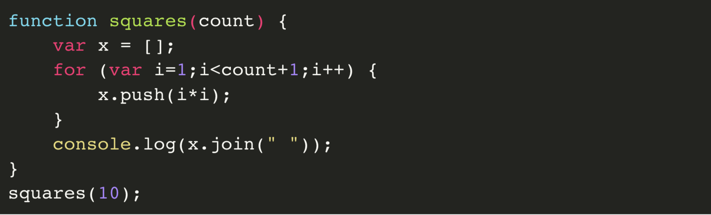

☰
5.7 & 5.8
What About Javascript?
Remember Netscape, the first huge commercial Web browser? In 1995, as Java was blooming, Netscape was resolving a problem. It displayed Web pages that were not very lively. You could have a nice cartoon of a monkey on the Web page, but there was no way to make the monkey dance when you moved over it with your mouse. Figuring out how to make that happen was the job of a language developer named Brendan Eich. He sat down and in a few weeks created a language called JavaScript.
JavaScript’s relationship with Java is tenuous; the strongest bond between the languages is the marketing linkage of their names. And the early history of JavaScript was uninspiring. So the monkey could now dance. You could do things to the cursor, make things blink when a mouse touched them.
But as browsers proliferated and the Web grew from a document-delivery platform into a software-delivery platform, JavaScript became, arguably, the most widely deployed language runtime 28 in the world. If you wrote some JavaScript code, you could run it wherever the Web was—everywhere.
JavaScript puttered around for years in the wilderness, as Java did, too. But without the resolute support of a corporate entity like Sun.
Then, about a decade ago people began to talk about Ajax29—the idea that you could build real software into a Web page, not just a document, but a program that could do real work.
Things could respond and change according to inputs. You could distribute your software to hundreds of millions of people this way, and JavaScript would work for them. It wasn’t as controlled as Java, it was much slower than natively compiled C, and it had a terrible lack of niceties. And yet: Gmail, Google Maps, Flickr, Twitter, and Facebook. Every single pixel on a Web page can be manipulated now; the type can be changed, the words can move around; buttons can be pressed.
As with any celebrity, there’s a whole industry dedicated to spackling up its deficiencies and making it look good. There are books about the “good parts” of JavaScript; there are libraries that make it easier and more consistent to program, too, such as jQuery, which can turn the many lines of code necessary to make a paragraph disappear into a single $("p.optional").hide();.
Back in the era of the iPod and candy-colored Macintoshes, Apple took the code of an open-source Web browser called Konqueror and modified it to create Safari, its own Web browser to compete with Microsoft’s Internet Explorer. Then in 2008 Google started to make its own modifications to the Web engine underneath Safari, called Webkit, and made its own version called Chrome with a spanking-fast JavaScript engine called V8. They made JavaScript fast. “Devs still approach performance of JS code as if they are riding a horse cart,” tweeted one developer, “but the horse had long been replaced with fusion reactor.” Google does better when JavaScript is fast.
In 2009 a developer named Ryan Dahl modified the V8 engine, which was free software, and made it run outside the browser.Δ There had been freestanding versions of JavaScript before (including some that ran inside Java, natch), but none so fast. He called this further fork Node.js, and it just took off. One day, JavaScript ran inside Web pages. Then it broke out of its browser prison. Now it could operate anywhere. It could touch your hard drive, send e-mail, erase all your files. It was a real programming language now. And the client … had become the server.
Here’s some JavaScript, squaring some numbers for you:
In a great and sudden wave, thousands of developers began to use Node.js and create modular libraries. If you knew how JavaScript worked on a Web page, then you could make it work on a server. And a few interesting characteristics of the language made it good for writing software that handles lots of simultaneous users. JavaScript listened for lots of things at once in a Web browser: A mouse moves; a key is typed; some information comes in from the network. On a server it could listen to dozens or hundreds of people all at once and give them the information they requested.
Soon the community developed a huge library of packages—bits of software that do specific things, such as reading files, or chattering with databases, or talking to Amazon’s Web services tools. At this writing, npmjs.com has 150,000 packages, and more than a billion copies of various packages have been downloaded in the past month.
NPM stands for Node Package Manager. It’s software that helps you install packages and … well, it’s unwieldy, honestly, because many of those 150,000 packages are just not that great. It’s a lot of searching and testing and sighing. But when you have this much stuff to pick from, for free, you shouldn’t complain. 30 JavaScript is a hodgepodge designed in a hurry, and it runs on, well, who knows, but let’s say a billion-plus devices, so you might as well get with the program. Your customers may not have iPhones, but they probably have some way of running JavaScript.
So you might use JavaScript to make a more interesting Web page. You might use it to make the client-side of a full-fledged application, like Google Docs, that runs in the browser. You might use it to make a Web server that talks to a Web browser. Or you might use it to make an API 31 that serves up data to a “client,” and sure, that client could be a laptop Web browser. But it’s 2015, and that client is quite probably an app on a smartphone.
What’s the Absolute Minimum I Must Know About PHP?
You can get a site up and running in PHP in a few minutes, and that’s the problem. It used to be the terrible choice you made when you needed to get something done on the Web, but increasingly JavaScript has replaced it as the default terrible choice.
PHP stands for Personal Home Page/Forms Interpreter. The idea was that when you loaded your Web pages, the PHP code would run before the page went out to the Internet. And PHP could, say, check whether you were logged in. If you were, it could show you your top secret account details; and if you weren’t, it could say, “Please log in.”
I know a lot of people who program in PHP, and they are smart, good people. PHP powers Etsy and Facebook. It powers Wikipedia, for God’s sake. WordPress. Out of all the Web’s pages, an enormous percentage is created with PHP.

Coding in PHP for a living is not a death sentence. Lots of people have gotten rich off PHP. It just means a lot of cutting and pasting, and a lot of trips to Google to figure out why things aren’t working.
Poor, sad, misbegotten, incredibly effective, massively successful PHP. Reading PHP code is like reading poetry, the poetry you wrote freshman year of college.
I spent so many hundreds, maybe thousands, of hours programming in PHP, back when I didn’t know what I was doing and neither did PHP. Reloading Web pages until my fingers were sore. (I can hear your sympathetic sobs.) Everything was always broken, and people were always hacking into my sites.
PHP. I don’t wish it any harm. I’m glad to see how well it’s done for itself. We had some good times together. I just don’t ever want to go back there.